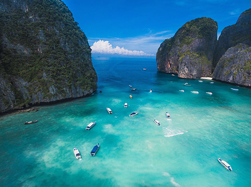
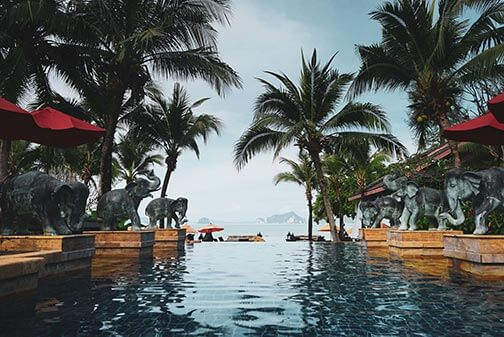
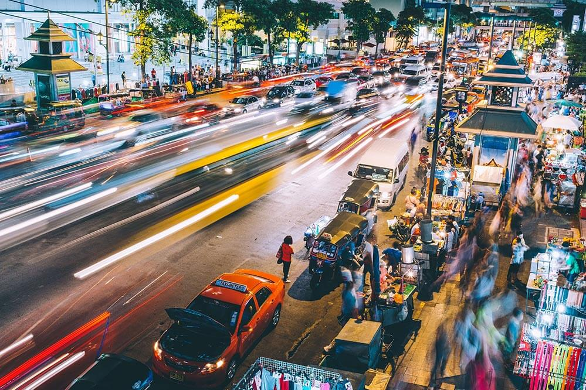

GO! Thailand
ABOUT THAILAND
Rich Culture
Thailand is home to a unique and vibrant culture, with fascinating history, ancient temples, traditional arts and crafts, and delicious cuisine.

Natural Beauty
From stunning beaches to lush jungles and mountain ranges, Thailand boasts some of the world's most beautiful natural scenery, perfect for outdoor enthusiasts and nature lovers.

Affordable Travel
With a low cost of living and affordable transportation options, Thailand is a budget-friendly destination that offers great value for money, whether you're a backpacker or luxury traveler.
MUST SEE

Wat Phra Kaew & Grand Palace in Bangkok: A stunning and historically significant complex of temples and palaces, home to the iconic Emerald Buddha statue.
Maya Bay in Koh Phi Phi: A breathtakingly beautiful bay made famous by the film "The Beach", with crystal-clear waters and white sandy beaches.

Chiang Mai Night Bazaar: A bustling night market offering a vast array of local goods, souvenirs, and delicious street food, located in the heart of Chiang Mai's old city.
ABOUT SAFETY IN THAI

Thailand is generally a safe country to visit, but like any other tourist destination, visitors should exercise caution and take necessary safety precautions to ensure a safe and enjoyable trip.
One of the most common safety concerns for tourists in Thailand is theft. Petty theft, such as pickpocketing and bag snatching, can occur in crowded tourist areas, especially in Bangkok, so visitors should keep their valuables close and be aware of their surroundings. Road safety is another concern in Thailand. The country has a high number of road accidents.
Thailand is also known for its natural beauty and outdoor activities, but visitors should take precautions when participating in adventure sports, such as zip-lining and scuba diving, to ensure that safety standards are met.
Visitors should also be aware of the local laws and customs, such as respecting the monarchy and avoiding drugs, as penalties for breaking the law can be severe. Overall, by exercising common sense and taking necessary safety precautions, visitors can enjoy a safe and memorable trip to Thailand.
GOING OUT AND NIGHTLIFE
Thai nightlife is renowned for being vibrant, exciting, and diverse, with something to suit all tastes and budgets. From bustling night markets to sophisticated rooftop bars and nightclubs, Thailand has it all.
One of the most famous areas for nightlife in Thailand is Bangkok's infamous red-light district, Patpong, where visitors can find a plethora of bars, clubs, and adult entertainment establishments. For those seeking a more refined experience, Bangkok is also home to some of the world's most luxurious rooftop bars, such as the iconic Sky Bar at Lebua State Tower.
Outside of Bangkok, Thailand's islands are also well-known for their party scenes. The island of Koh Phangan is famous for its full moon parties, while Koh Samui is home to a number of beachfront clubs and bars. Despite its reputation for being wild, Thailand's nightlife scene is also known for being friendly and welcoming to tourists.
However, it is important to exercise caution and be aware of potential scams or safety risks, especially when visiting the more notorious areas of Bangkok's nightlife scene. Overall, Thailand's nightlife is an exciting and unforgettable experience that is not to be missed for those who are looking for a good time.
LET'S
GO!
LET'S
GO!